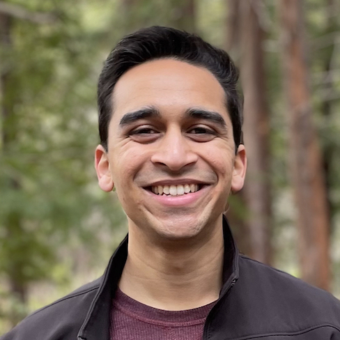

About Me
I am a robotics engineer with a passion for product design, mechatronics, and machine learning.
Currently, I manage mechanical design of the door trim and overhead module for a next-gen vehicle at Tesla. Previously, I was the lead engineer of the instrument panel for the Model 3 upgrade and Model Y Structural Pack. Before that, I designed a drivetrain for an electric skateboard company based out of Poland, created robotic kits and assembly guides for low-income school districts through C-STEM, and prototyped a handheld surgical tool used to treat pediatric ear infections at Tusker Medical.
I hold a Master's degree in robotics from Stanford University and a Bachelor's degree in mechanical engineering from UC Davis.
